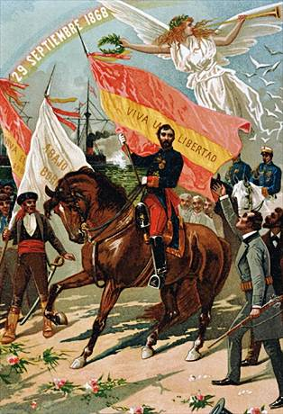

CONSTITUCIÓN DE 1869
Constitucionalismo de finales del siglo XIX En las décadas posteriores se mantuvo un clima de inestabilidad gubernamental y enfrentamiento entre los partidos políticos. Esto propició un pronunciamiento militar en septiembre de 1868 que acabó con el régimen constitucional existente, y dio inicio a una revolución política y social. Tras el exilio de la Reina Isabel II se encontró un gobierno provisional que convocó de elecciones inmediatas para Cortes constituyentes. Por primera vez, estas elecciones fueron por sufragio universal masculino. El texto resultante, la Constitución de 1869, fue reflejo del ideario progresista y democrático: se volvió a la concepción de la soberanía nacional como fuente de la misma, lo que reforzaba a las instituciones representativas, y se incluyó una ambiciosa declaración de derechos, entre los cuales por primera vez la libertad de cultos. Se mantuvieron las Cortes bicamerales: el Senado pasó a ser de elección popular, si bien mediante compromisos y entre personas que reuniesen requisitos mínimos mínimos. Por su parte, el Congreso pasó a ser elegido por sufragio universal. De otro lado, aunque el Rey mantenía sus facultades, se declaraba expresamente la responsabilidad de los ministros ante las Cortes. En concreto, se reconocía a ambas Cámaras el derecho de interpelación y el derecho de censura a todo el Gobierno oa ministros singulares. Una de las primeras decisiones que debió afrontar el nuevo régimen fue la elección de un monarca, lo cual se consiguió en 1870 en la persona de Amadeo de Saboya.

https://www.senado.es/web/conocersenado/senadohistoria/senado18341923/Constitucion1869/index.html
Constitución española de 1869
“La Nación Española y en su nombre las Cortes Constituyentes elegidas por sufragio universal, deseando afianzar la justicia, la libertad y la seguridad y proveer el bien de cuantos vivan en España, decretan y sancionan (...)
Art. 2º. Ningún español ni extranjero podrá ser detenido ni preso sino por causa de delito.
Art. 3º. Todo detenido será puesto en libertad o entregado a la autoridad judicial dentro de las veinticuatro horas siguientes al acto de su detención (...)
Art 4º. Ningún español podrá ser preso sino en virtud de mandamiento de juez competente (...)
Art. 21. La Nación se obliga a mantener el culto y los ministros de la religión católica. El ejercicio público o privado de cualquiera otro culto queda garantizado a todos los extranjeros residentes en España, sin más limitaciones que las reglas universales de la moral y del derecho. Si algunos españoles profesaren otra religión que la católica, es aplicable a los mismos todo lo dispuesto en el párrafo anterior.
Art. 26. A ningún español que esté en el pleno goce de sus derechos civiles podrá impedirse salir libremente del territorio, ni trasladar su residencia y haberes a país extranjero, salvo las obligaciones de contribuir al servicio militar o al mantenimiento de las cargas públicas.
Art. 32. La soberanía reside esencialmente en la nación, de la cual emanan todos los poderes.
Art. 33. La forma de Gobierno de la Nación española es la Monarquía. Art. 34. La potestad de hacer las leyes reside en las Cortes.(..)
Art. 35. El poder ejecutivo reside en el Rey, que lo ejerce por medio de sus ministros.
Art. 36. Los Tribunales ejercen el poder judicial.
Realiza un comentario de texto sobre la Constitución española de 1869 contestando a las siguientes preguntas:
- Clasificación
- Autor
- Contexto histórico
- Ideas principales de la Constitución de 1869
- Conclusión